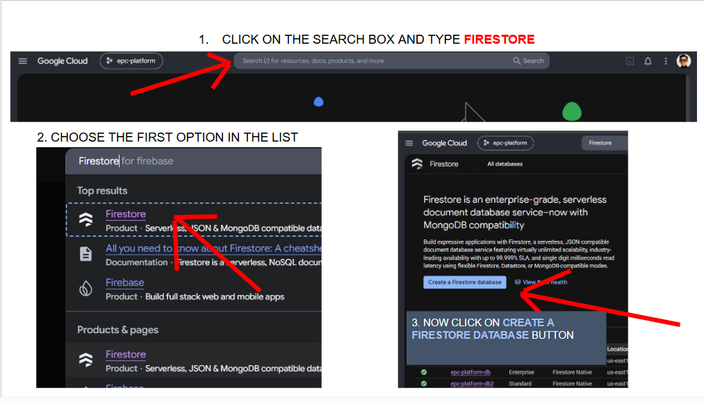
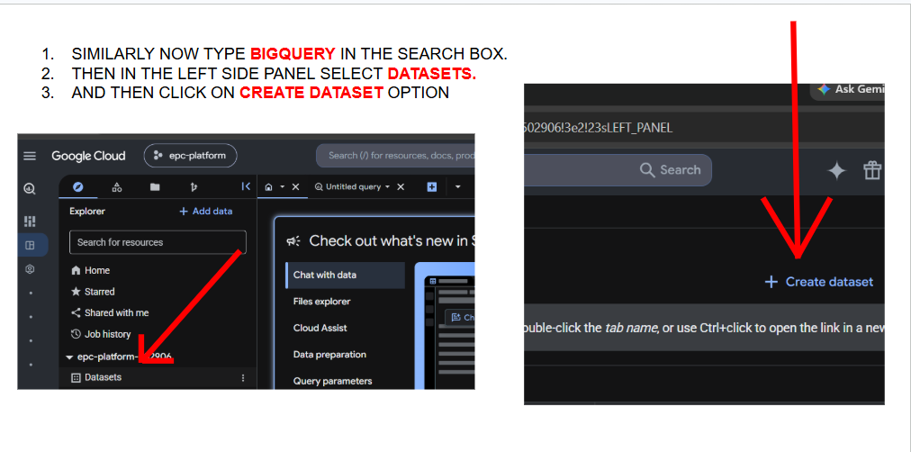

AI Memory & Human-in-the-Loop Governance
Understanding how an AI processes information — Context Window, State, and Memory — and the three levels of human oversight that decide how much control a human keeps over what the AI actually does. Plus Lab 3: migrating the pipeline to managed cloud services and containerizing it with Docker.
AI Responses Depend on Connected Information Sources
When we interact with an AI, we provide it with information to reason and generate a response. The quality of this response relies entirely on the connected data sources. This information does not always come from just the conversation text. It can originate from:
| Source | Description |
|---|---|
| Prompt | A basic prompt instruction — simple text telling the AI what to do. |
| File | A dedicated file — documents directly attached to the conversation. |
| Database | An external database — structured data the AI can query dynamically. |
The AI reasons and responds based strictly on whichever source is connected to it.
How AI Manages Information
Three core categories sit behind how an AI operates: Context Window, State, and Memory.
The Big Picture — A Video Game Analogy
Imagine you are playing a complex video game.
| AI Concept | Video Game Analogy | Meaning |
|---|---|---|
| Context Window | Visible Screen | What is visible right now |
| State | Character Progress | Current progress of the active level |
| Memory | Other Levels / Past Experiences | Information that can be recalled later |
Context Window
The Context Window dictates active processing capacity. It is the amount of information — like text, instructions, and other input — that the model can actively process in one interaction.
It has a defined limit; the AI cannot hold unlimited information at once.
When the Context Window limit is reached, older information may be dropped, truncated, summarized, or compressed depending on the system.
Real-World Example — Amazon Customer Support AI
Handling a refund request; at each step, the Context Window contains only the information needed for the current reasoning.
| Step | Action | Context |
|---|---|---|
| 1 | Identify the Issue | message: "My Amazon order was damaged." |
| 2 | Select Category | issue: "Damaged Product" |
| 3 | Initiate Refund | issue + request: "Refund" |
| 4 | Confirm Payment | refund_status: "Initiated" |
| 5 | Notify Customer | refund_status: "Confirmed" |
State
State tracks progress within a workflow. It is the current progress level of an agent's task — it tracks exactly how far the AI has progressed.
Step Tracking
Completed vs pending.
Continuous Updates
Changes as the agent moves.
Progress Control
Knows what's next.
Workflow Safety
No repeats or skips.
Example — A 7-Step Workflow
| Step | Status |
|---|---|
| Step 01 | ✓ Done |
| Step 02 | ✓ Done |
| Step 03 | ✓ Done |
| Step 04 | ● Active |
| Step 05 | ○ Pending |
| Step 06 | ○ Pending |
| Step 07 | ○ Pending |
Legend: ✓ Completed · ● Active · ○ Pending
Without state tracking, an agent may not know where it left off — it could repeat completed steps or skip pending ones.
Real-World Example — State in a Customer Support Refund Workflow
| Step | Description | Status |
|---|---|---|
| 1 | Issue identified | DONE |
| 2 | Category selected | DONE |
| 3 | Refund initiated | DONE |
| 4 | Payment confirmation | ACTIVE |
| 5 | Customer notified | PENDING |
State object progression:
current_step: 1
issue: "Damaged Product"current_step: 2
issue: "Damaged Product"
category: "Product Damage"current_step: 3
issue: "Damaged Product"
category: "Product Damage"
refund.status: "initiated"
refund.amount: 2499current_step: 4
issue: "Damaged Product"
category: "Product Damage"
refund.status: "initiated"
refund.amount: 2499
payment.status: "pending"AI Memory Challenge — Context, State, or External Memory?
Ten scenarios. For each one, decide which component is primarily responsible: the Context Window, State, or External Memory.
AI Memory Challenge
Score: 0/0Agent Memory
The AI's ability to retain and recall information beyond the immediate interaction.
Short-Term Memory Works Like RAM
RAM holds what your computer is actively working on right now. It is extremely fast to read and write — perfect for the current task. It is volatile: turn off the power (end the session) and everything in RAM is gone. Nothing in RAM is meant to survive — it exists only for the current run.
Short-term memory (STM) holds: active conversation, immediate tasks, recent observations, and current workflow progress.
Long-Term Memory: Semantic, Episodic & Procedural
Long-term memory (LTM) stores information that can survive beyond a single conversation. Simple analogy: a student preparing for an exam.
📚 Semantic Memory — "What I Know"
The student remembers facts and concepts.
"Python is a programming language."
Facts • Knowledge • Concepts
📝 Episodic Memory — "What Happened"
The student remembers personal past experiences and events.
"Last time, I made a mistake in my Python code. Programming is tough and time taking."
Past Events • Experiences • History
⚙️ Procedural Memory — "How I Do It"
The student remembers steps or methods to perform a task.
"To run Python: open terminal → activate env → run the file."
Skills • Steps • Procedures
The same conversation can hold semantic facts, episodic events, and procedural steps all at once — the type of memory is about what's being remembered, not which conversation it came from.
Types of Agent Memory — Definitions & Examples
| Type | Definition | Examples |
|---|---|---|
| Semantic Memory | General knowledge, facts, concepts, and meaning (independent of personal experience). | "The capital of France is Paris." · "A cat is a mammal." |
| Episodic Memory | Personal experiences and specific events with time & place (biographical memories). | An entire conversation log. |
| Procedural Memory | How to perform tasks, motor skills, and action-based learning (often automatic and hard to verbalize). | Note-making framework · Recipe-making procedure. |
External Memory
External memory functions like a reference library. It consists of information stored outside the AI model in separate systems that the AI can query when needed.
We don't carry every book from the library — just use the one we need.
Without external memory, the AI is limited by the information available in its immediate context.
External Memory Uses Different Storage Structures
Different types of information require different storage systems.
| Storage Type | Use Case | Description |
|---|---|---|
| Vector Database | Semantic retrieval using embeddings | Stores information as embeddings and retrieves data based on semantic meaning and conceptual similarity. |
| Structured Database | Orders, customers, transactions, relational data | Stores structured information such as customer profiles, orders, financial transactions, and product records. |
| File / Document Storage | PDFs, documents, logs | Stores raw information such as PDFs, long documents, and system logs. |
| Knowledge Graph | Entities and relationships | Stores entities and maps relationships between them. |
AI Governance — Defining Human Control
We have established how AI processes data and remembers information. The next question is: how much control should a human have over what the AI actually executes?
| Level | Acronym | Name | Description |
|---|---|---|---|
| Level 01 | HITL | Human-in-the-Loop | Human actively approves critical actions. |
| Level 02 | HOTL | Human-on-the-Loop | AI operates autonomously while a human supervises and can intervene. |
| Level 03 | HOOTL | Human-out-of-the-Loop | AI operates fully autonomously during execution, with oversight primarily before or after. |
A student writes the answer, but the teacher checks it before it is finally accepted. AI does the work → Human checks → Final decision.
Definition: AI works on a task, but a human reviews or approves the result before the process continues.
Real example — Customer Support AI: AI detects that a customer deserves a ₹50,000 refund → Human checks the case → Approves / Rejects the refund.
Key terms: Human Review · Approval · Correction · Decision
A student takes an exam while a discipline incharge supervises. The supervisor monitors the room and only intervenes if something suspicious happens. Student writes exam autonomously → Discipline incharge monitors room → Intervenes explicitly if cheating is suspected.
Definition: AI performs tasks autonomously, while a human monitors the system and steps in when necessary.
Real example — Driving with Cruise Control: AI car drives automatically on the highway → Driver actively monitors the road → Driver intervenes and takes manual control if something goes wrong.
Key terms: Monitoring · Supervision · Oversight · Intervention
The lights turn ON/OFF automatically based on time or sensor. Nobody needs to approve each action. AI works → AI decides → AI acts.
Definition: AI makes and executes decisions fully on its own, without human involvement during normal operation.
Real example — YouTube / Netflix Recommendations: AI studies your activity → selects content → shows recommendations automatically, without a human checking each one.
Key terms: Full Autonomy · Automation · Self-Execution · No Human Approval
Identify the Control Level
Ten real-world scenarios. For each one, decide whether it's Human-in-the-Loop, Human-on-the-Loop, Human-out-of-the-Loop — or a mix of both.
Identify the Control Level
Score: 0/0The journey so far
- Context Window, State, and Memory are three different jobs — what's visible now, how far a task has progressed, and what can be recalled later.
- The Context Window is a fixed-size, temporary buffer — once it's full, older information can be dropped or compressed.
- State tracks exactly where a multi-step workflow is, so nothing repeats or gets skipped.
- Short-term memory works like RAM — fast, active, and gone at the end of the session. Long-term memory splits into semantic, episodic, and procedural.
- External memory is the reference library — vector databases, structured databases, file storage, and knowledge graphs, each suited to a different kind of information.
- AI governance has three levels — HITL (human approves), HOTL (human supervises), HOOTL (AI acts alone) — and real systems sometimes mix more than one.
Migrating to the Cloud & Containerizing With Docker
Taking our agentic system global. This week moves local JSON files into managed cloud services, adds an admin approval panel, and packages everything with Docker.
Moving our local JSON files into managed cloud services — Firestore for tickets & clusters, BigQuery for historical incidents.
Give admins a panel to review each ticket cluster and approve or reject it before any downstream action is taken.
Clusters, tickets, and incidents live in Firestore/BigQuery, and admins can approve clusters from a live panel.
How the Migration Fits Together
Three local data sources move into two managed cloud services.
| Source | File | Destination | Notes |
|---|---|---|---|
| Clusters | clusters_output.json | Firestore | Admin approval panel reads from here |
| Tickets | sample_tickets.json | Firestore | — |
| Incidents | historical_incidents.json | BigQuery | — |
Files We'll Create This Week
| Folder | File | What It Holds |
|---|---|---|
memory/ | migrate_clusters_to_firestore.py | Pushes clustering results into Firestore |
memory/ | migrate_tickets_to_firestore.py | Pushes the 20 live tickets into Firestore |
memory/ | migrate_incidents_to_bigquery.py | Loads 15 historical incidents into BigQuery |
deployment/ | admin_panel.py | Web panel: view clusters, approve or reject each |
/ (root) | Dockerfile | Packages the app and its dependencies |
/ (root) | .dockerignore | Tells Docker which files to leave out of the image |
Containerizing With Docker
Packaging the pipeline so it runs the same everywhere.
Think of packing a whole kitchen into one box — the stove, the ingredients, the recipe, everything. Wherever you open that box, you can cook the exact same dish, no matter whose house you're in. Docker does that for our app. It packs our code plus everything it needs to run into one "box" (container), so it works the same on any computer — no setup surprises.
- Runs the same everywhere, every time
- No "it worked on my laptop" surprises
- Makes it simple to move to the cloud
How we'll be using it:
| File | Purpose |
|---|---|
Dockerfile | Defines the image: base Python, dependencies, and our app code |
.dockerignore | Keeps junk files (like local data, .git) out of the image |
Creating the Firestore Database — Step by Step
- Click on the search box and type Firestore.
- Choose the first option in the list.
- Now click on the Create a Firestore Database button.

Creating the BigQuery Dataset — Step by Step
- Similarly, now type BigQuery in the search box.
- Then, in the left side panel, select Datasets.
- Then click on the Create Dataset option.

Week 3 Completion Checklist
Confirm each step before moving on.
Part 1 of 2
- Created a Firestore database in the same GCP project as the rest of the pipeline
- Created a BigQuery dataset for historical incidents
- Granted the service account access to Firestore and BigQuery
migrate_clusters_to_firestore.pyran successfully — clusters visible in Firestore consolemigrate_tickets_to_firestore.pyran successfully — all 20 tickets visible in Firestoremigrate_incidents_to_bigquery.pyran successfully — all 15 incidents visible in BigQuery- Confirmed data in Firestore/BigQuery matches the original local JSON files
Part 2 of 2
- Dockerfile builds successfully into a local image
.dockerignoreexcludes local data files and other junk from the image- Container runs the migration scripts and approval panel without errors
- Admin approval panel loads and lists ticket clusters from Firestore
- Admin can approve or reject a cluster, and the decision is saved back to Firestore
- Confirmed the containerized approval panel is reachable and functioning
- Pushed code to GitHub and confirmed the new files are visible there
Glossary — tap a card to flip it
Final quiz
Eight questions covering the whole week — memory, governance, and the lab. Answer, get instant feedback, and retry as many times as you like.